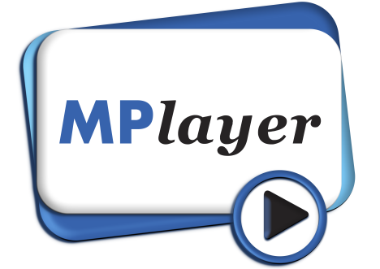
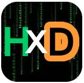

We have used a variety of freeware programs to make the ECC possible!, here is a small list:
PHP 5 (program language & engine)
PHP is a widely-used general-purpose scripting language that is especially suited for Web development and can be embedded into HTML.
http://www.php.net
PHP-GTK (program language extension for PHP)
PHP-GTK is an extension for the PHP programming language that implements language bindings for GTK+. It provides an object-oriented interface to GTK+ classes and functions and greatly simplifies writing client-side cross-platform GUI applications.
http://gtk.php.net
GTK+ (multiplatform graphical user interface)
GTK+ is a multi-platform toolkit for creating graphical user interfaces. Offering a complete set of widgets, GTK+ is suitable for projects ranging from small one-off projects to complete application suites.
http://www.gtk.org
SQLite 2 (database engine)
SQLite is a small C library that implements a self-contained, embeddable, zero-configuration SQL database engine.
http://www.sqlite.org
Autoit 3 (program language & compiler)
AutoIt v3 is a freeware BASIC-like scripting language designed for automating the Windows GUI and general scripting. It uses a combination of simulated keystrokes, mouse movement and window/control manipulation in order to automate tasks in a way not possible or reliable with other languages (e.g. VBScript and SendKeys).
http://www.autoitscript.com/autoit3/
Notepad++ (script and text editing)
Notepad++ is a free source code editor (and Notepad replacement), which supports several programming languages, running under the MS Windows environment.
http://notepad-plus.sourceforge.net

MPlayer is a movie player which runs on many systems (see the documentation). It plays most MPEG/VOB, AVI, Ogg/OGM, VIVO, ASF/WMA/WMV, QT/MOV/MP4, RealMedia, Matroska, NUT, NuppelVideo, FLI, YUV4MPEG, FILM, RoQ, PVA files, supported by many native, XAnim, and Win32 DLL codecs. You can watch VideoCD, SVCD, DVD, 3ivx, DivX 3/4/5, WMV and even H.264 movies.
Another great feature of MPlayer is the wide range of supported output drivers. It works with X11, Xv, DGA, OpenGL, SVGAlib, fbdev, AAlib, DirectFB, but you can use GGI, SDL (and this way all their drivers), VESA (on every VESA compatible card, even without X11!) and some low level card-specific drivers (for Matrox, 3Dfx and ATI), too! Most of them support software or hardware scaling, so you can enjoy movies in fullscreen. MPlayer supports displaying through some hardware MPEG decoder boards, such as the Siemens DVB, DXR2 and DXR3/Hollywood+.

HxD Hex editor (file editing)
HxD is a carefully designed and fast hex editor which, additionally to raw disk editing and modifying of main memory (RAM), handles files of any size.
The easy to use interface offers features such as searching and replacing, exporting, checksums/digests, insertion of byte patterns, a file shredder, concatenation or splitting of files, statistics and much more.
http://notepad-plus.sourceforge.net
Created with the Personal Edition of HelpNDoc: Produce Kindle eBooks easily